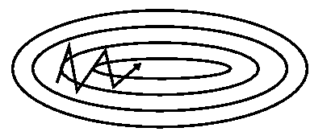

0 前言
在求解机器学习算法的模型参数，即无约束优化问题时，梯度下降算法是机器学习中使用非常广泛的算法之一。几乎当前每一个机器学习库或者深度学习库都会包括梯度下降算法的不同变种实现。它们就像一个黑盒优化器，很难得到它们优缺点的实际解释。
本文将对梯度、梯度下降等基础知识点、三大梯度下降法框架、梯度下降优化算法以及目前工业上使用的并行分布式优化算法进行讲解。
其中梯度下降法算法详解 参考自刘建平Pinard - 梯度下降（Gradient Descent）小结，刘老师通过代数方法引入通俗易懂，然后再讲解矩阵方法。梯度下降框架以及梯度下降优化算法 参考自An overview of gradient descent optimization algorithms, 这篇文章讲解非常全面，建议深入理解原文，一只鸟的天空对其进行了翻译，参考：梯度下降优化算法综述
1 基础知识点
1.1 导数
导数的几何意义可能很多人都比较熟悉: 当函数定义域和取值都在实数域中的时候，导数可以表示函数曲线上的切线斜率。 除了切线的斜率，导数还表示函数在该点的变化率。
$$
f’(x_0) = \lim_{\Delta x \to 0} \frac{\Delta y}{\Delta x} = \lim_{\Delta x \to 0} \frac {f(x_0 + \Delta x) - f(x_0)}{\Delta x}
$$

- $\Delta x$: $x$的变化量
- $\mathrm{d}x$：$x$的变化量$\Delta x \to 0$时，则记作微元$dx$；
- $\Delta y$：$\Delta y = f(x_0 + \Delta x) - f(x_0)$，是函数的增量；
- $\mathrm{d}y$：$\mathrm{d}y=f’(x_0)\mathrm{d}x$，是切线的增量；
- 当$\Delta x \to 0$时，$\mathrm{d}y$与$\Delta y$都是无穷小，$\mathrm{d}y$是$\Delta y$的主部，即$\Delta y = \mathrm{d}y+ o(\Delta x)$.
注意:反映的是函数$y=f(x)$在某一点处沿$x$轴正方向的变化率/变化趋势。直观地看，也就是在$x$轴上某一点处，如果$f’(x)>0$，说明$f(x)$的函数值在$x$点沿$x$轴正方向是趋于增加的；如果$f’(x)<0$，说明$f(x)$的函数值在$x$点沿$x$轴正方向是趋于减少的。
1.2 偏导数
偏导数定义如下：
$$
\frac{\partial f(x_0, x_1, \ldots, x_n)}{\partial x_j} = \lim_{\Delta x \to 0} \frac{\Delta y}{\Delta x} = \lim_{\Delta x \to 0} \frac {f(x_0, \ldots, x_j+ \Delta x, \ldots, x_n) - f(x_0, \ldots , x_j, \ldots, x_n)}{\Delta x}
$$
可以看到，导数与偏导数本质是一致的，都是当自变量的变化量趋于0时，函数值的变化量与自变量变化量比值的极限。直观地说，偏导数也就是函数在某一点上沿坐标轴正方向的的变化率。
偏导数和导数的区别
导数，指的是一元函数中，函数$y=f(x)$在某一点处沿x轴正方向的变化率；
偏导数，指的是多元函数中，函数$y=f(x_0,x_1,\ldots,x_n)$在某一点处沿某一坐标轴正方向的变化率。
1.3 方向导数
方向导数定义如下
$$
\frac{\partial f(x_0, x_1, \ldots, x_n)}{\partial l} = \lim_{\rho \to 0} \frac{\Delta y}{\Delta x} = \lim_{ \rho \to 0} \frac {f(x_0 + \Delta x_0, \ldots, x_j+ \Delta x, \ldots, x_n + \Delta x_n) - f(x_0, \ldots , x_j, \ldots, x_n)}{\rho}
$$
其中
$$
\rho = \sqrt{(\Delta x_0)^2 + (\Delta x_1)^2 + \ldots + (\Delta x_n)^2}
$$
在前面导数和偏导数的定义中，均是沿坐标轴正方向讨论函数的变化率。那么当我们讨论函数沿任意方向的变化率时，也就引出了方向导数的定义，即：某一点在某一趋近方向上的导数值。特就是说：我们不仅要知道函数在坐标轴正方向上的变化率（即偏导数），而且还要设法求得函数在其他特定方向上的变化率。而方向导数就是函数在其他特定方向上的变化率。
例题：
设二元函数$f(x, y) = x^2 + y^2$, 分别计算这个函数在点$(1,2)$沿方向$w = \{3,-4\}$与方向$u=\{1,0\}$ 的方向导数
解：由于$w$不是单位向量，所以将其单位化：$v = w^0 = \frac{w}{|w|} = \{\frac {3}{5}, -\frac{4}{5}\}$
$$
\begin{split}
\therefore f(x_0 + tv_1, y_0 + tv_2) - f(x_0,y_0) &= f(1 + \frac{3}{5}t, 2 - \frac{4}{5}t) - f(1,2) \\\
&=[(1+\frac{3}{5}t)^2 + (2-\frac{4}{5})^2] - (1^2+2^2) \\\
&=t^2-2t
\end{split}
$$
$$
\begin{split}
\therefore \left. \frac{\partial f}{\partial w} \right |_{(1,2)} &= \lim_{t \to 0} \frac{t^2-2t}{t} = -2 \\\
\left. \frac{\partial f}{\partial u} \right |_{(1,2)} &=\lim_{t \to 0} \frac{f(1+t, 2) - f(1,2)}{t} = \lim_{t \to 0} \frac{t^2+2t}{t} = 2
\end{split}
$$
1.4 梯度
梯度的定义如下：
$$
\nabla f(x_0, x_1, \ldots, x_n) = \left( \frac{\partial f}{\partial x_0}, \frac{\partial f}{\partial x_1}, \ldots, \frac{\partial f}{\partial x_n}\right)
$$
梯度符号可以用 $\nabla f$, 也可以用 $\operatorname{grad} f$ 表示
那么这个梯度向量求出来有什么意义呢？他的意义从几何意义上讲，就是函数变化增加最快的地方。具体来说，对于函数$f(x,y)$,在点$(x0,y0)$，沿着梯度向量的方向就是$(\frac{\partial f}{\partial x_0}, \frac{\partial f}{\partial y_0})^T$的方向是$f(x,y)$增加最快的地方。或者说，沿着梯度向量的方向，更加容易找到函数的最大值。反过来说，沿着梯度向量相反的方向，也就是 $-(\frac{\partial f}{\partial x_0}, \frac{\partial f}{\partial y_0})^T$的方向，梯度减少最快，也就是更加容易找到函数的最小值。
简单来说梯度的提出只为回答一个问题：函数在变量空间的某一点处，沿着哪一个方向有最大的变化率？
这里注意三点:
- 梯度是一个向量，即有方向有大小；
- 梯度的方向是最大方向导数的方向；
- 梯度的值是最大方向导数的值。
2 梯度下降
在找了一些现有材料，发现刘建平老师的梯度下降（Gradient Descent）小结 讲解的最为全面易懂，如果看完这小结有疑问的可以去网上找相关知识点进行学习消化。
2.1 梯度下降直观解释
首先来看看梯度下降的一个直观的解释。比如我们在一座大山上的某处位置，由于我们不知道怎么下山，于是决定走一步算一步，也就是在每走到一个位置的时候，求解当前位置的梯度，沿着梯度的负方向，也就是当前最陡峭的位置向下走一步，然后继续求解当前位置梯度，向这一步所在位置沿着最陡峭最易下山的位置走一步。这样一步步的走下去，一直走到觉得我们已经到了山脚。当然这样走下去，有可能我们不能走到山脚，而是到了某一个局部的山峰低处。

从上面的解释可以看出，梯度下降不一定能够找到全局的最优解，有可能是一个局部最优解。当然，如果损失函数是凸函数，梯度下降法得到的解就一定是全局最优解。
2.2 梯度下降的基本概念
在详细了解梯度下降的算法之前，我们先看看相关的一些概念。
步长（Learning rate）：步长决定了在梯度下降迭代的过程中，每一步沿梯度负方向前进的长度。用上面下山的例子，步长就是在当前这一步所在位置沿着最陡峭最易下山的位置走的那一步的长度。
特征（feature）：指的是样本中输入部分，比如2个单特征的样本$(x_0^0,y^0), (𝑥_0^1,y^1)$,则第一个样本特征为$x_0^0$，第一个样本输出为$y_0$。
假设函数（hypothesis function）：在监督学习中，为了拟合输入样本，而使用的假设函数，记为$h_\theta(x)$。比如对于单个特征的$m$个样本$(x_0^j,y^j)(j=1,2,\ldots ,m)$,可以采用拟合函数如下： $h_{\theta}(x) = \theta_0 + \theta_1 x$。
损失函数（loss function）：为了评估模型拟合的好坏，通常用损失函数来度量拟合的程度。损失函数极小化，意味着拟合程度最好，对应的模型参数即为最优参数。在线性回归中，损失函数通常为样本输出和假设函数的差取平方。比如对于$m$个样本$(x^j,y^j)(j=1,2,…m)$,采用线性回归，损失函数为：
$$
J(\theta_0, \theta_1) = \sum_{j=1}^{m} (h_{\theta}(x^j) - y^j)^2
$$
其中$x^j$表示第$j$个样本特征，$y^j$表示第$j$个样本对应的输出，$h_{\theta}(x^j)$为假设函数。
2.3 梯度下降的详细算法
梯度下降法的算法可以有代数法和矩阵法（也称向量法）两种表示，如果对矩阵分析不熟悉，则代数法更加容易理解。不过矩阵法更加的简洁，且由于使用了矩阵，实现逻辑更加的一目了然。这里先介绍代数法，后介绍矩阵法。
推荐一个官方的迭代可视化，如下图所示，一边看一边操作可以快速理解。
2.3.1 梯度下降法的代数方式描述
先决条件: 确认优化模型的假设函数和损失函数。
比如对于线性回归，假设函数表示为 $h_\theta(x_1^j, x_2^j, \ldots , x_n^j) = \theta_0 + \theta_1 x_1^j + \theta_2 x_2^j + \ldots + \theta_n x_n^j$, 其中$\theta_i, (i=1,2,\ldots ,n)$ 为模型参数，$x_i^j,(i=1,2,\ldots ,n)$ 为第$j$个样本的$n$个特征。这个表示可以简化，我们增加一个特征$x_0^j = 1$， 这样就可以简化成
$$
h_\theta(x_1^j, x_2^j, \ldots , x_n^j) = \sum_{i=0}^{n} \theta_l x_i^j
$$同样是线性回归，对应于上面的假设函数，损失函数为：
$$
J( \theta_0 , \theta_1, \ldots , \theta_n) = \frac{1}{2m} \sum_{j = 0}^{m} (h_\theta(x_0^j, x_1^j, \ldots, x_n^j) - y^j)^2
$$
算法相关参数初始化: 主要是初始化$\theta_0,\theta_1, \ldots, \theta_n$,算法终止距离$\epsilon$以及步长$\alpha$。在没有任何先验知识的时候，可以将所有的$theta$初始化为0， 将步长初始化为1。在调优的时候再优化。
算法过程:
- 确定当前位置的损失函数的梯度，对于$\theta_i$,其梯度表达式: $\frac{\partial J( \theta_0 , \theta_1, \ldots , \theta_n)}{\partial \theta_i}$
- 用步长乘以损失函数的梯度，得到当前位置下降的距离，即$\alpha \frac{\partial J( \theta_0 , \theta_1, \ldots , \theta_n)}{\partial \theta_i}$对应于前面登山例子中的某一步。
- 确定是否所有的$\theta_i$,梯度下降的距离都小于$\epsilon$，如果小于$\epsilon$则算法终止，当前所有的$\theta_i, (i=0,1,…n)$即为最终结果。否则进入步骤4.
- 更新所有的$\theta$，对于$\theta_i$，其更新表达式如下。更新完毕后继续转入步骤1.
$$
\theta_i \leftarrow \theta_i - \alpha \frac{\partial J( \theta_0 , \theta_1, \ldots , \theta_n)}{\partial \theta_i}
$$
下面用线性回归的例子来具体描述梯度下降。假设我们的样本是
$$
\begin{split}
& (x_1^0, x_2^0, \ldots, x_n^0, y^0), \\\
& (x_1^1, x_2^1, \ldots, x_n^1, y^1), \\\
& \cdots \\\
& (x_1^m, x_2^m, \ldots, x_n^m, y^m)
\end{split}
$$
损失函数如前面先决条件所述：
$$
J( \theta_0 , \theta_1, \ldots , \theta_n) = \frac{1}{2m} \sum_{j = 0}^{m} (h_\theta(x_0^j, x_1^j, \ldots, x_n^j) - y^j)^2
$$
则在算法过程步骤1中对于$\theta_i$ 的偏导数计算如下：
$$
\frac{\partial J( \theta_0 , \theta_1, \ldots , \theta_n)}{\partial \theta_i} = \frac{1}{m} \sum_{j = 0}^{m} (h_\theta(x_0^j, x_1^j, \ldots, x_n^j) - y^j)x_i^j
$$
由于样本中没有$x_0^j$, 上式中令所有的$x_0^j = 1$为1.
步骤4中$\theta_i$的更新表达式如下：
$$
\theta_i \leftarrow \theta_i - \alpha \frac{1}{m} \sum_{j = 0}^{m} (h_\theta(x_0^j, x_1^j, \ldots, x_n^j) - y^j)x_i^j
$$
从这个例子可以看出当前点的梯度方向是由所有的样本决定的，加 $\frac{1}{m}$ 是为了好理解。由于步长也为常数，他们的乘机也为常数，所以这里$ \alpha \frac{1}{m}$可以用一个常数表示。
在下面第2.4节会详细讲到的梯度下降法的变种，他们主要的区别就是对样本的采用方法不同。这里我们采用的是用所有样本。
2.3.2 梯度下降法的矩阵方式描述
这一部分主要讲解梯度下降法的矩阵方式表述，相对于3.3.1的代数法，要求有一定的矩阵分析的基础知识，尤其是矩阵求导的知识。
传送门：矩阵微分，这里面有用到所有的矩阵求导微分公式，如果需要深入理解矩阵求导建议参考张贤达的《矩阵分析与应用》一书。
先决条件:和2.3.1类似， 需要确认优化模型的假设函数和损失函数。对于线性回归，假设函数$h_\theta(x_1^j, x_2^j, \ldots , x_n^j) = \theta_0 + \theta_1 x_1^j + \theta_2 x_2^j + \ldots + \theta_n x_n^j$ 的矩阵表达式为：
$$
h_\theta(\mathbf{X}) = \mathbf{X}\theta
$$
其中， 假设函数$h_\theta(X)$为$m \times 1$的向量,$\theta$为$(n+1) \times 1$的向量，里面有$n+1$个代数法的模型参数。$\mathbf{X}$为$m \times (n+1)$维的矩阵。$m$代表样本的个数，$n+1$代表样本的特征数。损失函数的表达式为：
$$
J(\theta) = \frac{1}{2} (\mathbf{X}\theta - Y)^T(\mathbf{X}\theta - Y)
$$其中$Y$是样本的输出向量，维度为$m \times 1$.
算法相关参数初始化: $\theta$向量可以初始化为默认值，或者调优后的值。算法终止距离$\epsilon$，步长$\alpha$和2.3.1比没有变化。
算法过程:
- 确定当前位置的损失函数的梯度，对于$\theta$向量,其梯度表达式为：$\frac{\partial J(\theta)}{\partial \theta}$
- 用步长乘以损失函数的梯度，得到当前位置下降的距离，即$\alpha \frac{\partial J(\theta)}{\partial \theta}$对应于前面登山例子中的某一步.
- 确定$\theta$向量里面的每个值,梯度下降的距离都小于$\epsilon$，如果小于$\epsilon$则算法终止，当前$\theta$向量即为最终结果。否则进入步骤4.
- 更新$\theta$向量，其更新表达式如下。更新完毕后继续转入步骤1.
$$
\theta \leftarrow \theta - \alpha \frac{\partial J(\theta)}{\partial \theta}
$$
还是用线性回归的例子来描述具体的算法过程。
损失函数对于$\theta$向量的偏导数计算如下：
$$
\frac{\partial J(\theta)}{\partial \theta} = \mathbf{X}^T(\mathbf{X}\theta - Y)
$$
步骤4中$\theta$向量的更新表达式如下：
$$
\theta \leftarrow \theta - \alpha \mathbf{X}^T(\mathbf{X}\theta - Y)
$$
对于2.3.1的代数法，可以看到矩阵法要简洁很多。这里面用到了矩阵求导链式法则，和两个矩阵求导的公式。
这里面用到了矩阵求导链式法则，和两个个矩阵求导的公式。
公式1:
$$
\frac{\partial (\mathbf{x}^T\mathbf{x})}{\partial \mathbf{x}} = 2\mathbf{x}
$$
其中$\mathbf{x}$为向量。
公式2:
$$
\begin{split}
\nabla_{X} f(AX+B) &= A^T \nabla_{Y} f \\\
Y &= AX+B
\end{split}
$$
其中$f(Y)$ 为标量。
2.4 梯度下降的算法调优
在使用梯度下降时，需要进行调优。哪些地方需要调优呢？
算法的步长选择。在前面的算法描述中，提到取步长为1，但是实际上取值取决于数据样本，可以多取一些值，从大到小，分别运行算法，看看迭代效果，如果损失函数在变小，说明取值有效，否则要增大步长。前面说了。步长太大，会导致迭代过快，甚至有可能错过最优解。步长太小，迭代速度太慢，很长时间算法都不能结束。所以算法的步长需要多次运行后才能得到一个较为优的值。
算法参数的初始值选择。 初始值不同，获得的最小值也有可能不同，因此梯度下降求得的只是局部最小值；当然如果损失函数是凸函数则一定是最优解。由于有局部最优解的风险，需要多次用不同初始值运行算法，关键损失函数的最小值，选择损失函数最小化的初值。
归一化。由于样本不同特征的取值范围不一样，可能导致迭代很慢，为了减少特征取值的影响，可以对特征数据归一化，也就是对于每个特征$x$，求出它的期望$\overline{x}$和标准差$\operatorname{std}(x)$，然后转化为：
$$
\frac{x-\overline{x}}{\operatorname{std}(x)}
$$
这样特征的新期望为0，新方差为1，迭代速度可以大大加快。
3 三大梯度下降优化框架
有三种梯度下降算法框架，它们不同之处在于每次学习(更新模型参数)使用的样本个数或者每次更新使用不同的样本会导致每次学习的准确性和学习时间不同， 下面一一介绍。
3.1 批量梯度下降法（Batch Gradient Descent, BGD）
批量梯度下降法也称作为全量梯度下降, 是梯度下降法最常用的形式，从名字就可以看出这个框架每次使用全量的训练集样本来更新模型参数，其公式为：
$$
\theta_i \leftarrow \theta_i - \alpha \frac{1}{m} \sum_{j = 0}^{m} (h_\theta(x_0^j, x_1^j, \ldots, x_n^j) - y^j)x_i^j
$$
由于我们有m个样本，这里求梯度的时候就用了所有m个样本的梯度数据。
实现代码如下：
for i in range(epochs):
params_grad = evaluate_gradient(loss_function,data,params)
params = params - learning_rate * params_gradepochs 是用户输入的最大迭代次数。通过上诉代码可以看出，每次使用全部训练集样本计算损失函数loss_function的梯度params_grad，然后使用学习速率learning_rate朝着梯度相反方向去更新模型的每个参数params。一般各现有的一些机器学习库都提供了梯度计算api。如果想自己亲手写代码计算，那么需要在程序调试过程中验证梯度计算是否正确，具体验证方法可以参见这里。
全量梯度下降每次学习都使用整个训练集，因此其优点在于每次更新都会朝着正确的方向进行，最后能够保证收敛于极值点(凸函数收敛于全局极值点，非凸函数可能会收敛于局部极值点)，但是其缺点在于每次学习时间过长，并且如果训练集很大以至于需要消耗大量的内存，并且全量梯度下降不能进行在线模型参数更新。
3.2 随机梯度下降法（Stochastic Gradient Descent, SGD）
随机梯度下降法，其实和批量梯度下降法原理类似，区别在与求梯度时没有用所有的m个样本的数据，而是仅仅选取一个样本j来求梯度。对应的更新公式是：
$$
\theta_i \leftarrow \theta_i - \alpha (h_\theta(x_0^j, x_1^j, \ldots, x_n^j) - y^j)x_i^j
$$
实现代码如下：
for i in range(epochs):
np.random.shuffle(data)
for example in data:
params_grad = evaluate_gradient(loss_function,example,params)
params = params - learning_rate * params_grad批量梯度下降算法每次都会使用全部训练样本，因此这些计算是冗余的，因为每次都使用完全相同的样本集。而随机梯度下降算法每次只随机选择一个样本来更新模型参数，因此每次的学习是非常快速的，并且可以进行在线更新。
随机梯度下降最大的缺点在于每次更新可能并不会按照正确的方向进行，因此可以带来优化波动(扰动)，如下图：
不过从另一个方面来看，随机梯度下降所带来的波动有个好处就是，对于类似盆地区域（即很多局部极小值点）那么这个波动的特点可能会使得优化的方向从当前的局部极小值点跳到另一个更好的局部极小值点，这样便可能对于非凸函数，最终收敛于一个较好的局部极值点，甚至全局极值点。
由于波动，因此会使得迭代次数（学习次数）增多，即收敛速度变慢。不过最终其会和全量梯度下降算法一样，具有相同的收敛性，即凸函数收敛于全局极值点，非凸损失函数收敛于局部极值点。
随机梯度下降法，和3.1的批量梯度下降法是两个极端，一个采用所有数据来梯度下降，一个用一个样本来梯度下降。自然各自的优缺点都非常突出。对于训练速度来说，随机梯度下降法由于每次仅仅采用一个样本来迭代，训练速度很快，而批量梯度下降法在样本量很大的时候，训练速度不能让人满意。对于准确度来说，随机梯度下降法用于仅仅用一个样本决定梯度方向，导致解很有可能不是最优。对于收敛速度来说，由于随机梯度下降法一次迭代一个样本，导致迭代方向变化很大，不能很快的收敛到局部最优解。
那么，有没有一个中庸的办法能够结合两种方法的优点呢？有！这就是3.3的小批量梯度下降法。
3.3 小批量梯度下降法（Mini-batch Gradient Descent, MBGD）
小批量梯度下降法是批量梯度下降法和随机梯度下降法的折衷，也就是对于$m$个样本，我们采用$x$个子样本来迭代，$1<x<m$。一般可以取$x=10$，当然根据样本的数据，可以调整这个$x$的值。对应的更新公式是：
$$
\theta_i \leftarrow \theta_i - \alpha \frac{1}{m} \sum_{j = t}^{t+x-1} (h_\theta(x_0^j, x_1^j, \ldots, x_n^j) - y^j)x_i^j
$$
实现代码如下：
for i in range(epochs):
np.random.shuffle(data)
for batch in get_batches(data, batch_size=50):
params_grad = evaluate_gradient(loss_function,batch,params)
params = params - learning_rate * params_grad相对于随机梯度下降，Mini-batch梯度下降降低了收敛波动性，即降低了参数更新的方差，使得更新更加稳定。相对于`全量梯度下降·，其提高了每次学习的速度。并且其不用担心内存瓶颈从而可以利用矩阵运算进行高效计算。实践中可以进行多次试验，选择一个更新速度与更次次数都较适合的样本数。
Mini-batch梯度下降虽然可以保证收敛性。Mini-batch梯度下降常用于神经网络中。
3.4 面临的挑战
虽然梯度下降算法效果很好，并且广泛使用，但同时其也存在一些挑战与问题需要解决：
- 选择一个合理的学习速率很难。如果学习速率过小，则会导致收敛速度很慢。如果学习速率过大，那么其会阻碍收敛，即在极值点附近会振荡。
- 学习速率调整(又称学习速率调度，Learning rate schedules)试图在每次更新过程中，改变学习速率，如退火。一般使用某种事先设定的策略或者在每次迭代中衰减一个较小的阈值。无论哪种调整方法，都需要事先进行固定设置，这边便无法自适应每次学习的数据集特点。
- 模型所有的参数每次更新都是使用相同的学习速率。如果数据特征是稀疏的或者每个特征有着不同的取值统计特征与空间，那么便不能在每次更新中每个参数使用相同的学习速率，那些很少出现的特征应该使用一个相对较大的学习速率。
- 对于非凸目标函数，容易陷入那些次优的局部极值点中，如在神经网络中。Dauphin指出更严重的问题不是局部极值点，而是鞍点，这些鞍点通常被相同误差的平稳段包围，这使SGD很难逃脱，因为在所有维度上梯度都接近于零。
4 梯度下降优化算法
下面将讨论一些在深度学习社区中经常使用用来解决上诉问题的一些梯度优化方法，不过并不包括在高维数据中不可行的算法，如牛顿法。
4.1 Momentum
如果在峡谷地区(某些方向较另一些方向上陡峭得多，常见于局部极值点), SGD会在这些地方附近振荡，从而导致收敛速度慢。这种情况下，动量(Momentum)便可以解决。动量在参数更新项中加上一次更新量(即动量项),即：
$$
\begin{split}
v_t &\leftarrow \beta v_{t-1} + \alpha \nabla_{\theta}J(\theta) \\\
\theta_t & \leftarrow \theta_{t-1} - v_t
\end{split}
$$
其中动量项超参数$\gamma < 1$一般是小于等于0.9。
下面两个对比图将体现动量的作用


加上动量项就像从山顶滚下一个球，求往下滚的时候累积了前面的动量(动量不断增加)，因此速度变得越来越快，直到到达终点。同理，在更新模型参数时，对于那些当前的梯度方向与上一次梯度方向相同的参数，那么进行加强，即这些方向上更快了；对于那些当前的梯度方向与上一次梯度方向不同的参数，那么进行削减，即这些方向上减慢了。因此可以获得更快的收敛速度与减少振荡。
如果需要进一步理解可以参考最优化算法之Momentum
4.2 Nesterov accelerated gradient (NAG)
4.3 Adagrad
4.4 Adadelta
4.5 RMSprop
4.6 Adam
4.7 AdaMax
4.8 Nadam
4.9 AMSGrad
4.10 算法可视化比较
4.11 算法选择
5 并行与分布式SGD
5.1 Hogwild
5.2 Downpour SGD
5.3 Delay-tolerant Algorithms for SGD
5.4 TensorFlow
5.5 Elastic Averaging SGD
6 更多SGD优化策略
6.1 Shuffling and Curriculum Learning
6.2 Batch normalization
6.3 Early stopping
6.4 Gradient noise
7 梯度下降法和其他无约束优化算法的比较
8 总结
参考文档
- An overview of gradient descent optimization algorithms
- 刘建平Pinard - 梯度下降（Gradient Descent）小结
- 理解梯度下降
- ML重要概念：梯度（Gradient）与梯度下降法（Gradient Descent）
- 维基百科-导数
- 维基百科-偏导数
- 维基百科-方向导数
- wikipedia-Gradient_descent
- CS231n Convolutional Neural Networks for Visual Recognition
- wikipedia-矩阵微分 Matrix Calculus
- 梯度下降优化算法综述
- Identifying and attacking the saddle point problem in high-dimensional non-convex optimization
- Two problems with backpropagation and other steepest-descent learning procedures for networks